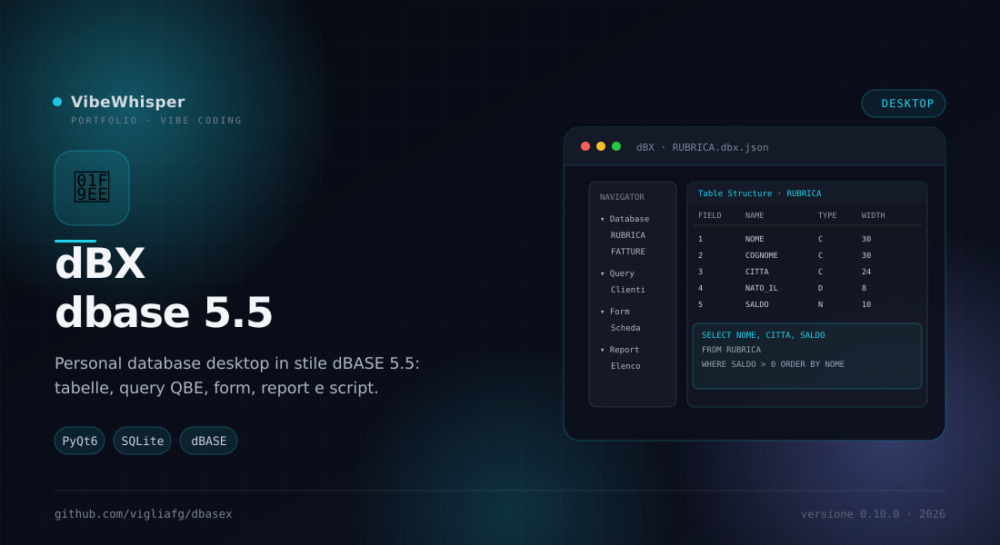

dBX
Personal database desktop multipiattaforma in Python + PyQt6 con motore SQLite, ispirato a dBASE 5.5 for Windows di Borland. Riunisce i costruttori visivi che hanno reso celebre dBASE — tabelle, form, report, script, menu e progetto — con validazione dei campi condivisa e un'interfaccia moderna a tema Aurora.
📖 Cos'è
dBX è un database personale a finestre che ricostruisce il modello di lavoro di dBASE 5.5 senza emularne il pixel: area documenti a schede, Navigator a categorie, Table Structure a griglia unica, Form Designer a tre zone, Report Designer a bande impilate, Program Editor, Menu Designer e Project Editor. I dati vivono in SQLite, il progetto in un manifest JSON, e ogni oggetto — tabella, query, form, report, etichetta, menu, programma — è modificabile dai suoi costruttori. Il tema Aurora sostituisce il grigio Win16 con superfici chiare, gradienti e focus visibile; i temi silver e dark restano disponibili.
👤 A chi serve
A chi vuole un database desktop senza scrivere SQL per gestire rubrica, fatture, inventari, soci o collezioni. A chi ha conosciuto dBASE e cerca gli stessi strumenti — struttura tabella, query per esempio, report a bande, etichette — dentro un'app di oggi. E a chi vuole studiare come si costruisce un ambiente dati completo con Python, PyQt6 e SQLite: 584 test automatici, 147 scenari end-to-end e nessun servizio esterno.
⚙️ Come funziona
Il progetto è un file .dbx.json affiancato al database SQLite: il Navigator elenca gli oggetti per categoria (Database, Query, Form, Report, Etichette, Menu, Programmi) e li apre in schede. Il Table Builder definisce campi, tipi, obbligatorietà, default, indici, relazioni e regole; il Query Designer costruisce join dalle foreign key, filtri, ordinamento e GROUP BY, con anteprima SQL parametrizzata e modalità QBE a query image. I Form hanno designer a tre zone, Object Inspector, eventi e runtime con portali uno-a-molti; i Report sono a bande con gruppi, totali, grafici e anteprima PDF; le etichette coprono preset A4/Avery e mail merge. Il Program Editor esegue MiniScript con azioni tipizzate, parametri dichiarati, variabili globali e transazioni esplicite; il Project Builder valida i riferimenti e produce una cartella distribuibile più zip.
✨ Caratteristiche principali
- Navigator e area documenti — Oggetti per categoria, filtro file e schede dei documenti con menu dBASE e SpeedBar
- Table Builder — Griglia
Field · Name · Type · Width · Decimal · Index, schede per indici, relazioni, proprietà e DDL - Validazione dei campi — Obbligatorietà condizionale, campo Scelta statico o da tabella, dominio numerico, maschere, maiuscole e incremento, con issue strutturate per cella
- Query Designer e QBE — Join dalle FK, filtri AND, ordinamento multiplo, aggregati e query image con example elements
- Form Designer e runtime — Palette controlli, righelli, griglia 8 px, undo/redo, Object Inspector, portali uno-a-molti
- Report Designer — Bande impilate, gruppi, totali, grafici barre/linee/torta, anteprima e PDF
- Etichette e mail merge — Preset A4/Avery, griglia colonne/righe, modello
[campo]e stampa su più fogli - Program Editor — MiniScript con vista azioni ↔ sorgente, Step Picker, parametri, variabili globali e transazioni
- Esperti e manutenzione — Wizard per tabelle, query, report e form; rinomina, duplica, compatta e verifica integrità
- Collaudo E2E — 147 scenari e 1.611 controlli su 505/505 funzioni coperte, con gate automatico di copertura
- Import/export — Import CSV con mappatura tipi, export CSV, crosstab e build del progetto in zip
📦 Installazione e avvio
# Requisiti: Python 3.10+ e PyQt6 6.10.2 git clone https://github.com/vigliafg/dbasex.git cd dbasex python3 -m venv .venv && source .venv/bin/activate pip install -e . # dal sorgente # In alternativa, dalla release 0.10.0 pip install dbx-0.10.0-py3-none-any.whl python -m dbx # finestra vuota python -m dbx --demo # progetto Rubrica + Fatture python -m dbx --theme silver # tema storico dBASE python -m dbx --smoke # verifica headless end-to-end
In alternativa ./start.sh sceglie un interprete con PyQt6 senza attivare il virtualenv.
Dalla 0.10.0 la release include wheel, sdist e bundle PyInstaller per Linux x86_64,
Windows x86_64 e macOS arm64, oltre a SHA256SUMS. I bundle non sono firmati:
SmartScreen e Gatekeeper possono chiedere una conferma. Scarica gli artefatti dalla
pagina Release.
💡 Casi d'uso
- Gestionale personale — Rubrica, fatture, scadenze e preventivi con form e report su misura
- Archivi e cataloghi — Tabelle collegate, query di riepilogo e crosstab per inventari e collezioni
- Automazione leggera — Script MiniScript con parametri, transazioni e menu per le operazioni ricorrenti
- Studio e didattica — Un clone strutturale di dBASE con 584 test e 147 scenari E2E, utile per capire un ambiente dati desktop completo